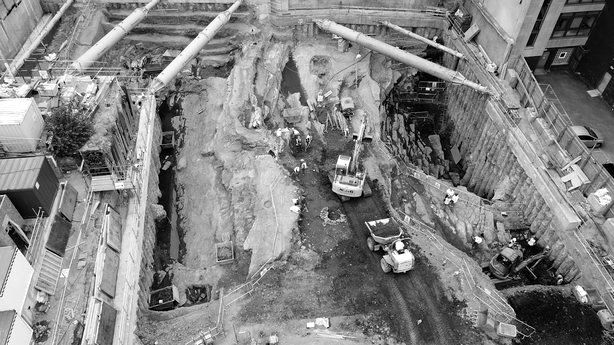
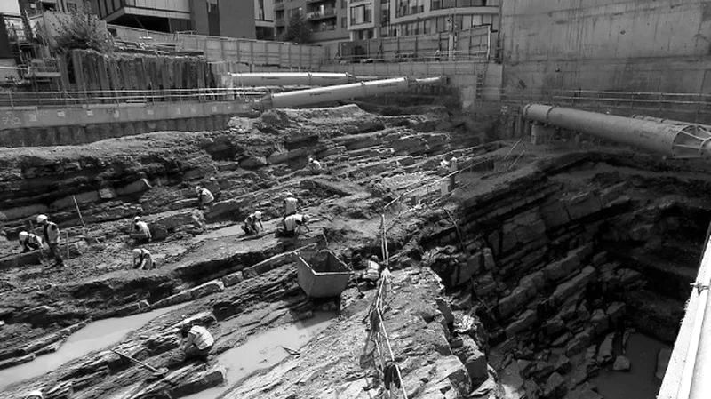
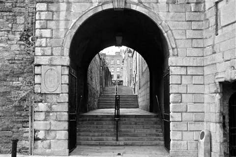

Stop 12 of 15 · Dublin Castle
Ship Street Little
A sheep market, and a ravine as deep as any dig in Dublin.
Sráid na gCaorach
Ship Street Little and Ship Street Great, which run along the southern walls of Dublin Castle, are named not after ships but after the sheep market once held here. The Irish name, Sráid na gCaorach, means Street of the Sheep.
The Poddle arrives from the west and flows under Ship Street Little and the Ship Street gate of Dublin Castle.
The original channel
Archaeological excavations in 2020, on a site just south of Ship Street Little and west of Ship Street Great, found that the Poddle here once ran through a ravine that fed into the Dubh Linn.
The ravine was so deep that, at the time of writing, it was the deepest archaeological excavation in the city’s history.
Once the monks of St Thomas’s Abbey had diverted water away, the channel dried up, and the ravine was quarried for stone for the walls of the Norman castle.
Watch and read


